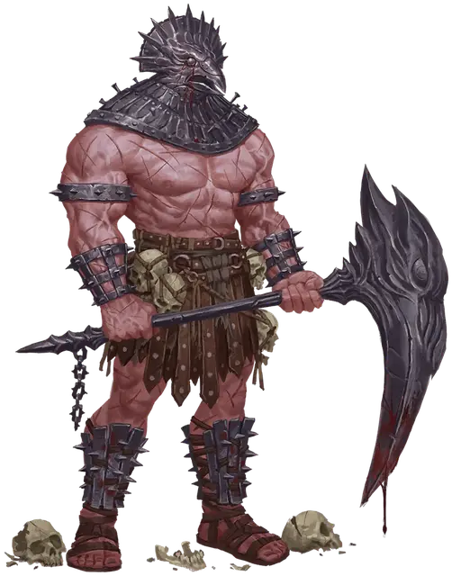

Безжалостный джаггернаут
Relentless Juggernaut
Большое Исчадие

Класс Доспеха 17 (природный доспех)
Хиты 161 (14к10 + 84)
Скорость 30 футов
| мод | спас | ||
|---|---|---|---|
| СИЛ | 22 | +6 | +6 |
| ЛОВ | 12 | +1 | +5 |
| ТЕЛ | 22 | +6 | +6 |
| мод | спас | ||
|---|---|---|---|
| ИНТ | 8 | −1 | −1 |
| МДР | 15 | +2 | +6 |
| ХАР | 16 | +3 | +7 |
Навыки Восприятие +6, Выживание +6
Иммунитет к состояниям испуг, истощение, очарование
Чувства тёмное зрение 120 футов, пассивное Восприятие 16
Опасность 12 (8400 опыта)
Бонус мастерства +4
Особенности
Языки. Понимает все языки, но не может говорить.
Легендарное сопротивление (3/день). Если джаггернаут проваливает спасбросок, он может вместо этого сделать спасбросок успешным.
Регенерация. Джаггернаут восстанавливает 20 хитов в начале своего хода. Если джаггернаут получает урон излучением, эта особенность не действует в начале следующего хода джаггернаута. Джаггернаут умирает только в том случае, если он начинает свой ход с 0 хитов и не регенерирует.
Необычная природа. Джаггернаут не нуждается в воздухе, еде, питье или сне.
Действия
Мультиатака. Джаггернаут совершает две атаки. Он может заменить одну из атак «Формованием смерти», если оно будет перезаряжено.
Жертва палача. Рукопашная атака оружием: +10 к попаданию, досягаемость 5 фт., одна цель. Попадание: 17 (2к10 + 6) колющего урона, и если цель является существом, её скорость снижается на 10 футов до начала следующего хода джаггернаута.
Кулак. Рукопашная атака оружием: +10 к попаданию, досягаемость 5 фт., одна цель. Попадание: 11 (1к10 + 6) дробящего урона, и если цель — Большое или меньшего размера существо, оно должна преуспеть в спасброске Силы Сл 18 или будет сбито с ног.
Формование смерти (перезарядка 5-6). Джаггернаут волшебным образом превращает элемент своего окружения в смертоносное орудие. Существо, которое джаггернаут может видеть в пределах 60 футов от него, должно совершить спасбросок Ловкости Сл 18. Если спасбросок провален, цель поражается одним из следующих эффектов (на выбор джаггернаута):
• Летящий камень. Цель получает 22 (5к8) дробящего урона и становится недееспособной до начала следующего хода джаггернаута, а снаряд исчезает.
• Выкашивающая шрапнель. Цель получает 14 (4к6) рубящего урона, и снаряд исчезает. В начале каждого своего хода цель получает 10 (3к6) урона некротической энергией от раны, оставленной шрапнелью. Рана затягивается, если цель восстанавливает любое количество хитов или если существо действием останавливает кровь, что требует успешной проверки Мудрости Сл 15 (Медицина).
Легендарные действия
Джаггернаут может совершить 3 легендарных действия, выбирая из представленных ниже вариантов. За один раз можно использовать только одно легендарное действие, и только в конце хода другого существа. Джаггернаут восстанавливает использованные легендарные действия в начале своего хода.
Неумолимое наступление. Джаггернаут перемещается на расстояние, не превышающее величину его скорости, игнорируя труднопроходимую местность. Любой объект на его пути получает 55 (10к10) дробящего урона, если его никто не несёт и не носит.
Ускоренное формование (стоит 3 действия). Джаггернаут перезаряжает «Формование смерти» и использует её.
Описание
Безжалостные джаггернауты — это массивные твари, жаждущие резни. Их присутствие искажает мир вокруг них, позволяя им создавать оружие, с помощью которого они могут убивать свою добычу. Острые железные заборы, сокрушительные сталагмиты и стеклянные лезвия — все это мгновенно появляется, чтобы стать орудием жестокости джаггернаута. Каждый джаггернаут считает определенную территорию своей и наносит урон всем нарушителям.
См. дополнительно статью: "Бестиарий: Безжалостные Убийцы"